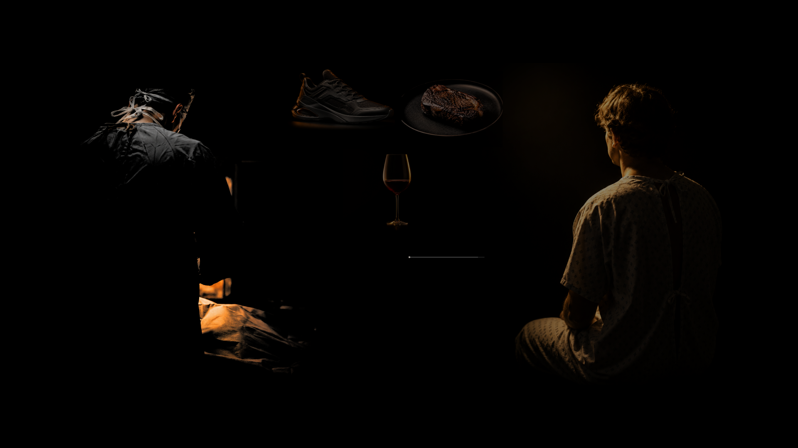
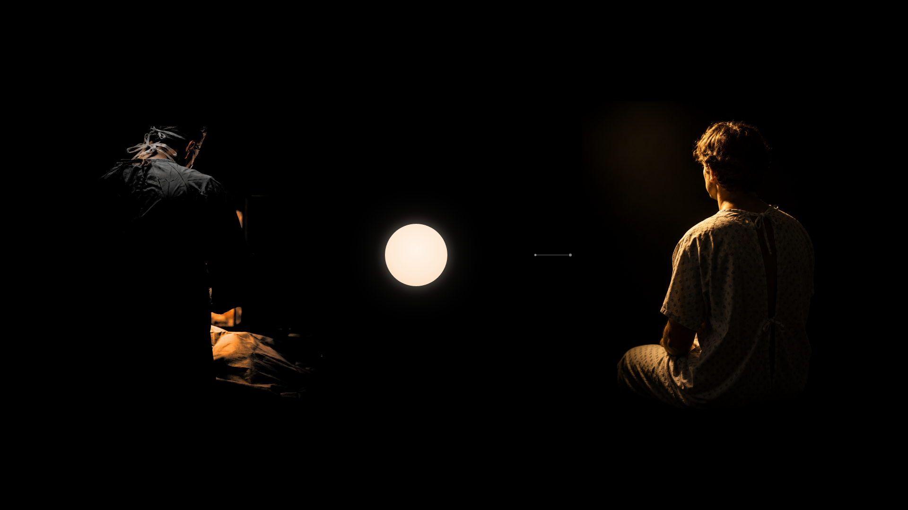
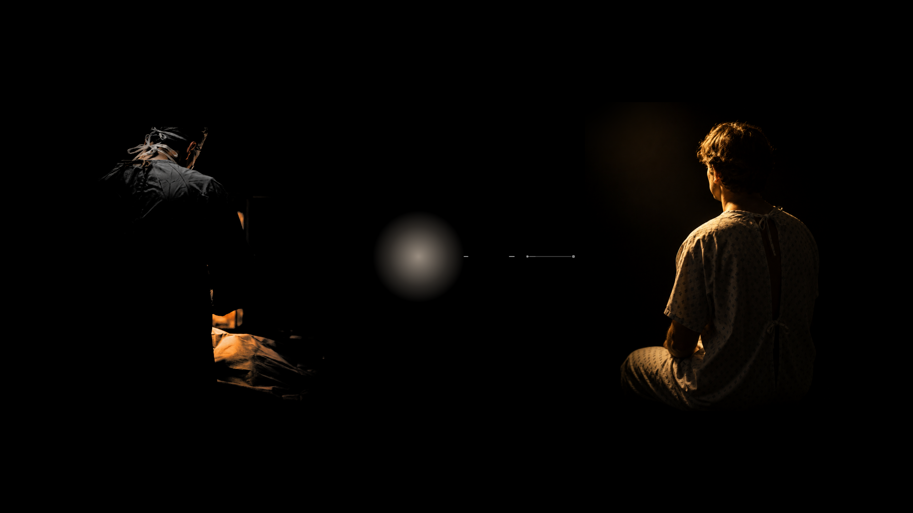
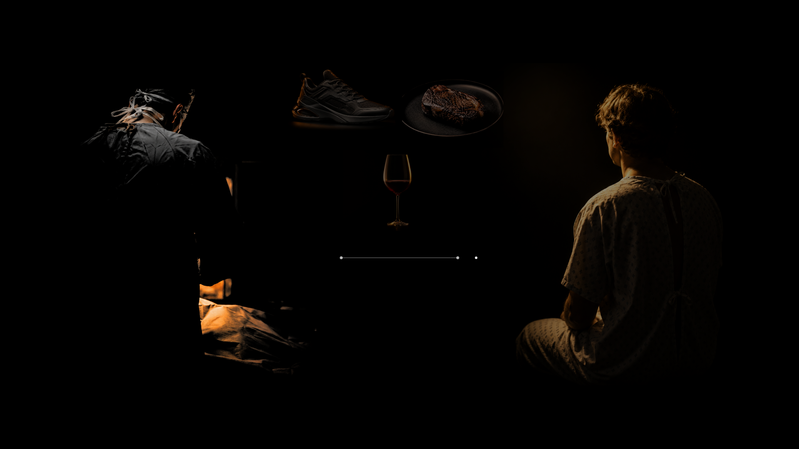
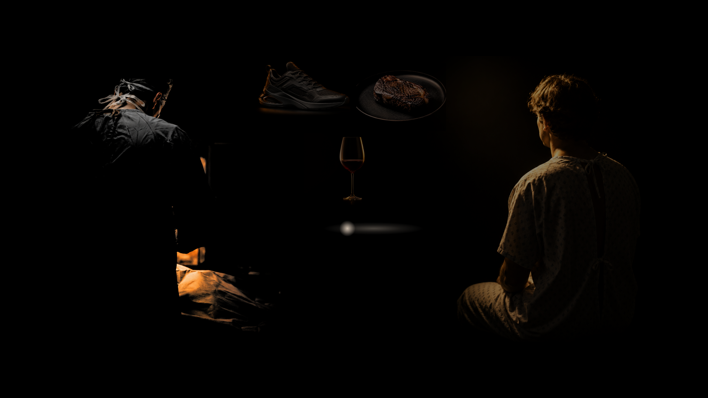
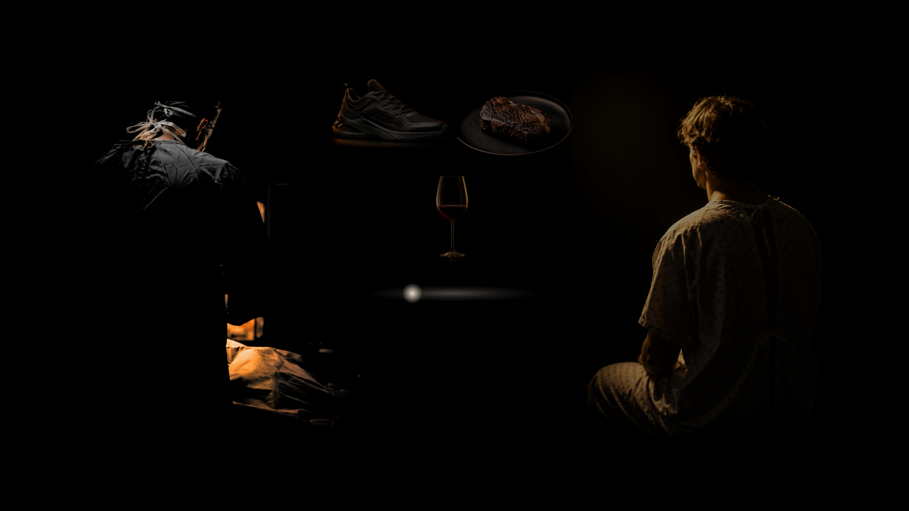
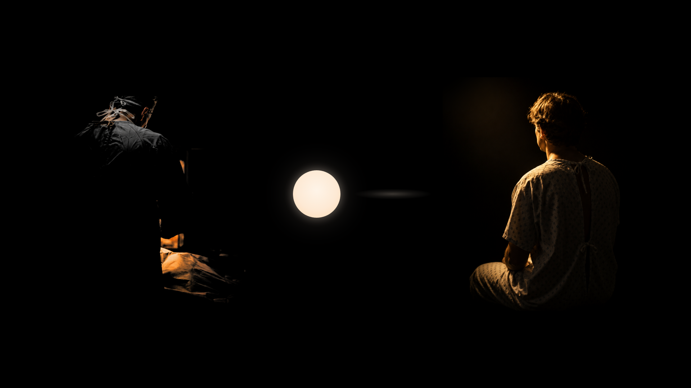
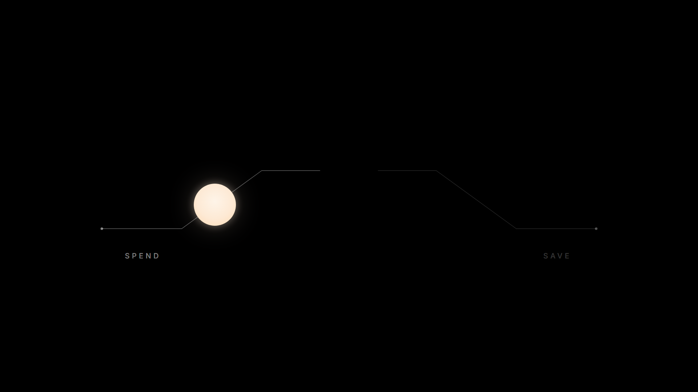

Prototype Gate 2 · r3 — the return path's failure language as three live candidates · the spend goods contained
The presenter's review medium is the live prototype: ?proto=gate2&path=1, =2, =3 on the
dev server, forward and backward, motion-on and reduced-motion. Binding on every candidate: no degraded stroke ever
appears in a settled frame — failure is carried by motion, by absence, or by a medium that is not a line. Every
non-target beat is proven unchanged against r2's approved renders at zero differing pixels, under every path value
(landed-proof-r3.json). His selection re-enters the approved record at the gate close.
path=1 — THE REACH
clean and full-weight, always: it extends, halts short, and withdraws — what settles is a whole short stroke with its terminal dot
S2 b3 · settled — the attempt, while the goods hang as possibilities

S2 b3 · mid-gestureS2 b4 · settled — the failure that sets up the statementS2 b4 · mid-gesture

S3 b1 · settled — what remains at the birth

S3 b1 · the pool mid-birth, consuming it
path=2 — THE ABSENCE
no return line exists: the service path stays whole and the terminal dot strains toward the surgeon and subsides — twice, harder at b4
S2 b3 · settled — the attempt, while the goods hang as possibilities

S2 b3 · mid-gestureS2 b4 · settled — the failure that sets up the statementS2 b4 · mid-gestureS3 b1 · settled — what remains at the birthS3 b1 · the pool mid-birth, consuming it
path=3 — THE FLOW
a faint warm stream flows, stalls, and disperses short of arrival — what settles is only a dim residual drift
S2 b3 · settled — the attempt, while the goods hang as possibilities

S2 b3 · mid-gestureS2 b4 · settled — the failure that sets up the statement

S2 b4 · mid-gesture

S3 b1 · settled — what remains at the birthS3 b1 · the pool mid-birth, consuming it
The spend goods, contained (s4-b2-b2 — direct markup, no candidates)
S4 b2 · settled — reduced uniform scale, a compact triangle wholly inside the left third

S4 b2 · the claim’s redemption mid-gesture — unchanged